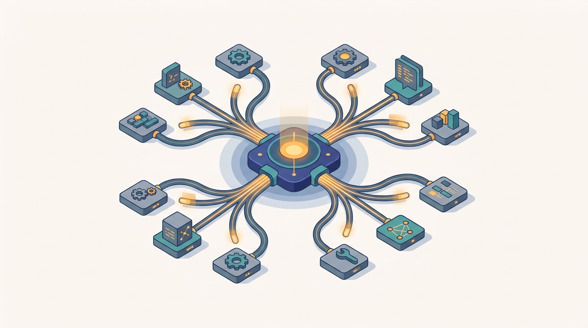

"I am the planner. I decomposed the task, dispatched it to three executors, and waited. Two came back brilliant, one hallucinated a tool that does not exist, and now I must decide whether the team succeeded. Coordination, it turns out, was the easy part."
A Planner Agent Awaiting Its Quorum
Distributed agent orchestration is the engineering of systems in which many large language model agents, each capable of reasoning and acting, are composed into a working distributed system that is correct, fast, affordable, and reliable. This is the chapter where the classical multi-agent ideas of Part VI meet modern language-model agents, and the central claim is simple: a multi-agent LLM system is a distributed system, and orchestrating it is a distributed-systems discipline, not a prompt-engineering trick. Every familiar primitive returns in agentic dress. A tool call is a remote procedure call across a process or network boundary. A planner dispatching subtasks to executors is a coordinator fanning work out to workers, with all the partial-failure and straggler problems that implies. A debate among critic agents that converges on an answer is a consensus protocol run over natural language. The memory a team reads and writes is shared distributed state, with the same staleness and consistency questions raised back in the foundations of this book. The engine running the agent graph is a workflow scheduler that must handle retries, timeouts, and recovery. Ten sections develop the discipline in order: the LLM agent as a distributed component and the tool use that makes it actuate, the planner-executor and role-specialized structures that turn one agent into a team, the parallel and distributed workflows that run those teams at scale, the debate and reflection patterns that improve their answers, the communication protocols (the Model Context Protocol and Agent2Agent) that make agents and tools interoperable, the shared state and distributed memory they coordinate through, the orchestration engines that schedule and recover them, the evaluation methods that tell whether any of it works, and the cost, latency, and reliability concerns that decide whether it survives contact with production. As the last chapter of Part VI, this one carries the whole part's lesson about coordination, consensus, and failure into a regime where the agents are expensive, the channel is language, and every step is a network call that costs money and can fail.
Chapter Overview
This is the synthesis chapter of Part VI, and its subject is what happens when the multi-agent ideas built across the part are applied to agents that are themselves large language models. Where Chapter 31 showed that simple agents need no coordinator to act as one, this chapter asks the opposite question: what coordination, what protocols, and what failure modes return when each agent is individually powerful, the communication channel is open-ended natural language, and every message is a billable, latency-bound, sometimes-failing network call. The answer is that the entire distributed-systems toolkit of this book comes back into play. The ten sections develop that answer in order, moving from the single agent as a component, through the structures and workflows that assemble agents into teams, into the protocols and shared state that let them interoperate, and out to the orchestration engines, evaluation, and economics that decide whether a multi-agent system works in production.
The ten sections fall into four movements. The first establishes the component and its reach: Section 32.1 frames the LLM agent as a distributed component, and Section 32.2 gives it tool use and function calling, the capability that turns a text generator into something that can act on the world across a network boundary. The second movement assembles components into teams: Section 32.3 builds the planner-executor pattern and role-specialized agents, Section 32.4 runs those teams as parallel and distributed workflows, and Section 32.5 develops debate, critique, and reflection as the patterns that make a team's answer better than any single agent's. The third movement gives the team a shared substrate: Section 32.6 covers the agent communication protocols (the Model Context Protocol and Agent2Agent) that act as a distributed message fabric, and Section 32.7 builds the shared state and distributed memory the team coordinates through. The fourth movement faces production: Section 32.8 studies the distributed orchestration engines that schedule and recover agent graphs, Section 32.9 tackles the hard problem of evaluating open-ended agentic systems, and Section 32.10 closes with the cost, latency, and reliability of running agent fleets at scale.
Read in order, the ten sections take you from "a language model can call a tool" to a working understanding of how to compose, run, evaluate, and afford a fleet of reasoning agents: frame the agent as a component, give it tools, organize it into planner and executor roles, run those roles as distributed workflows, sharpen their answers through debate and reflection, wire them together with interoperable protocols, let them share distributed memory, schedule and recover them on an orchestration engine, measure whether the system actually works, and account for what it costs to keep running. The argument carries forward the multi-agent foundations of Chapter 29, whose consensus and coordination return here as debate and orchestration, and the distributed serving substrate of Chapter 24, whose served models are the very agents this chapter composes. As the final chapter of Part VI, it gathers the part's recurring question, how independent pieces act as one, and answers it for the most capable and most expensive agents in the book, then hands the thread to the infrastructure that runs them all.
Prerequisites
This chapter sits at the meeting point of two earlier threads and assumes both. From Chapter 29: Multi-Agent Systems the reader should carry the engineering frame of a society of autonomous agents acting in a shared environment, together with the treatment of coordination and consensus, because the planner-executor structures of Section 32.3 and the debate of Section 32.5 are exactly those ideas applied to language-model agents, and the multi-agent failure modes named there return when the agents are expensive and the channel is natural language. From Chapter 24: Distributed LLM Serving the reader should carry a working picture of how a large language model is actually served across machines: batching, the KV cache, request scheduling, and the latency and throughput economics of a model endpoint. Every agent in this chapter is a client of exactly such an endpoint, and the cost, latency, and reliability concerns of Section 32.10 are those serving economics multiplied across many agents and many turns. The reader is also assumed comfortable with the distributed-systems vocabulary of the rest of the book, remote procedure calls, retries and timeouts, shared state and staleness, and workflow scheduling, since the chapter's whole argument is that orchestrating language-model agents is a distributed-systems problem in this vocabulary. No prior experience with any specific agent framework is required; Sections 32.1 and 32.2 build the agent abstraction from the ground up before any team is assembled on top of it.
Learning Objectives
- Explain why a multi-agent large language model system is a distributed system, and map agentic constructs (tool calls, planner dispatch, debate, shared memory, the orchestration engine) onto their classical distributed-systems counterparts (remote procedure calls, coordinator-worker fan-out, consensus, shared state, workflow scheduling).
- Describe the LLM agent as a distributed component and implement tool use through function calling, reasoning about the agent's loop of observe, decide, act, and observe again across a network boundary.
- Design planner-executor and role-specialized agent teams, and run them as parallel and distributed workflows, reasoning about decomposition, fan-out, partial failure, and stragglers.
- Apply debate, critique, and reflection patterns across agents to improve a team's output, and relate this convergence to the distributed consensus of Chapter 29.
- Explain the role of agent communication protocols (the Model Context Protocol and Agent2Agent) as a distributed message and capability fabric, and explain how shared state and distributed memory let agents coordinate over time.
- Characterize the distributed orchestration engines that schedule, retry, and recover agent graphs, and the trade-offs between graph-based, event-driven, and conversational orchestration.
- Evaluate distributed agentic systems on open-ended, stochastic tasks, and reason about the cost, latency, and reliability of running agent fleets at production scale.
If you keep one thing from this chapter, keep this: a multi-agent large language model system is a distributed system, and orchestrating it well means recognizing that a tool call is a remote procedure call, a planner dispatching to executors is coordinator-worker fan-out, debate among agents is consensus over natural language, shared agent memory is distributed state, and the orchestration engine is a workflow scheduler, so the whole distributed-systems discipline of this book, retries and timeouts, partial failure, staleness, and cost-latency-reliability trade-offs, returns here with the agents now powerful and every message a billable network call. Read forward, the sections build the discipline in the order a practitioner needs it: frame the agent as a component and give it tools, assemble agents into planner-executor and role-specialized teams, run those teams as distributed workflows, sharpen their answers through debate and reflection, wire them together with interoperable protocols and shared memory, schedule and recover them on an orchestration engine, and then measure and pay for the result. Read as a question, the chapter asks of any agentic system: what is the unit of work, how does one agent act on the world, how do many agents divide a task, how do they run in parallel without losing correctness, how do they critique each other into a better answer, how do they speak a common protocol, what state do they share, what engine runs the graph, how do we know it works, and what does it cost to keep it running. The roadmap below walks the ten sections that answer it, and because this is the last chapter of Part VI, the final section hands the thread to the cluster and infrastructure that runs every distributed AI system in the book.
Chapter Roadmap
- 32.1 LLM Agents as Distributed Components Frames the large language model agent as a distributed component with an observe-decide-act loop, and establishes the central claim that composing such agents is a distributed-systems problem.
- 32.2 Tool Use and Function Calling Gives the agent its reach into the world through function calling, treating each tool invocation as a remote procedure call across a process or network boundary with its own latency and failure modes.
- 32.3 Planner-Executor and Role-Specialized Agents Turns one agent into a team by separating planning from execution and assigning specialized roles, the coordinator-worker pattern rendered in natural language.
- 32.4 Parallel and Distributed Multi-Agent Workflows Runs agent teams as parallel and distributed workflows, confronting decomposition, fan-out, partial failure, and stragglers when many agents work at once.
- 32.5 Debate, Critique, and Reflection Across Agents Develops the patterns by which agents improve each other's output, debating, critiquing, and reflecting their way to an answer better than any single agent's, a consensus reached over language.
- 32.6 Agent Communication Protocols (MCP and A2A) Introduces the Model Context Protocol and the Agent2Agent protocol as the distributed message and capability fabric that lets agents and tools interoperate across vendors and processes.
- 32.7 Shared State and Distributed Memory Builds the shared state and distributed memory that a team of agents reads and writes over time, with the same consistency and staleness questions as any distributed store.
- 32.8 Distributed Orchestration Engines Studies the engines that schedule, retry, and recover agent graphs, comparing graph-based, event-driven, and conversational orchestration as workflow schedulers for agents.
- 32.9 Evaluating Distributed Agentic Systems Tackles the hard problem of judging open-ended, stochastic, multi-step agentic systems, from task-completion benchmarks to trajectory and cost-aware evaluation.
- 32.10 Cost, Latency, and Reliability at Scale Closes the chapter with the economics of running agent fleets in production: the cost of many model calls, the latency of multi-turn coordination, and the reliability engineering that keeps the system standing.
Read the ten sections in order and you will hold a working model of how a fleet of reasoning agents becomes a system you can run, trust, and afford: Section 32.1 frames the agent as a distributed component, Section 32.2 gives it tools, Section 32.3 organizes agents into planner and executor roles, Section 32.4 runs them as distributed workflows, Section 32.5 sharpens their answers through debate and reflection, Section 32.6 wires them together with interoperable protocols, Section 32.7 lets them share distributed memory, Section 32.8 schedules and recovers them on an orchestration engine, Section 32.9 measures whether the system works, and Section 32.10 accounts for what it costs to keep running. The thread to watch is that nothing in the distributed-systems toolkit is retired here; it all returns, applied to agents that are powerful, talkative, and expensive. That thread runs straight out of Part VI into the infrastructure of Chapter 33, where the clusters that run every distributed AI system in this book, agentic or not, are scheduled and managed.
What's Next?
This chapter closed Part VI by carrying its entire lesson about coordination, consensus, and failure into the era of large language model agents, and by insisting on a single unifying view: a multi-agent LLM system is a distributed system, so orchestrating it is a distributed-systems discipline. The ten sections built that discipline from the single agent and its tools, through planner-executor teams and distributed workflows, debate and reflection, communication protocols and shared memory, orchestration engines, and finally evaluation and the cost-latency-reliability economics that decide whether any of it survives in production. With this chapter, Part VI is complete: the part traveled from distributed artificial intelligence and game-theoretic foundations, through multi-agent systems and multi-agent reinforcement learning, into swarm intelligence, and now to the orchestration of reasoning agents, a full arc of how independent pieces act as one. Chapter 33: Cluster Infrastructure and Scheduling opens Part VII and turns from what runs to what it runs on. Every system in this book so far, every parallel training job, every served model, every agent fleet, ultimately lands on a cluster that must place work on machines, share resources fairly, recover from node failures, and keep utilization high. The next chapter builds that substrate. Read Chapter 33 next, and see the infrastructure beneath everything you have learned to distribute.
Bibliography & Further Reading
Agents, Reasoning, and Tool Use
Yao, S., Zhao, J., Yu, D., Du, N., Shafran, I., Narasimhan, K., Cao, Y. "ReAct: Synergizing Reasoning and Acting in Language Models." arXiv:2210.03629, 2022. arxiv.org
The paper that interleaved chain-of-thought reasoning with tool actions in a single loop, the canonical reference for the observe-decide-act agent of Sections 32.1 and 32.2.
Shinn, N., Cassano, F., Berman, E., Gopinath, A., Narasimhan, K., Yao, S. "Reflexion: Language Agents with Verbal Reinforcement Learning." arXiv:2303.11366, 2023. arxiv.org
The method by which an agent reflects on its own failures in natural language and retries, the foundation of the reflection pattern in Section 32.5.
Multi-Agent Teams and Frameworks
Wu, Q., Bansal, G., Zhang, J., Wu, Y., Li, B., Zhu, E., Jiang, L., Zhang, X., Zhang, S., Liu, J., Awadallah, A. H., White, R. W., Burger, D., Wang, C. "AutoGen: Enabling Next-Gen LLM Applications via Multi-Agent Conversation." arXiv:2308.08155, 2023. arxiv.org
The conversational multi-agent framework whose configurable agents and group chat motivate the orchestration patterns of Sections 32.3 and 32.8.
Hong, S., Zheng, X., Chen, J., Cheng, Y., Wang, J., Zhang, C., Wang, Z., Yau, S. K. S., Lin, Z., Zhou, L., Ran, C., Xiao, L., Wu, C., Schmidhuber, J. "MetaGPT: Meta Programming for a Multi-Agent Collaborative Framework." arXiv:2308.00352, 2023. arxiv.org
The framework that encodes standardized operating procedures into role-specialized agents, a direct model for the role assignment of Section 32.3.
Qian, C., Liu, W., Liu, H., Chen, N., Dang, Y., Li, J., Yang, C., Chen, W., Su, Y., Cong, X., Xu, J., Li, D., Liu, Z., Sun, M. "ChatDev: Communicative Agents for Software Development." arXiv:2307.07924, 2023. arxiv.org
A virtual software company of role-playing agents that communicate to build software, a concrete instance of the planner-executor and parallel-workflow patterns of Sections 32.3 and 32.4.
Debate, Critique, and Collaboration
Du, Y., Li, S., Torralba, A., Tenenbaum, J. B., Mordatch, I. "Improving Factuality and Reasoning in Language Models through Multiagent Debate." arXiv:2305.14325, 2023. arxiv.org
The study showing that multiple agents debating to a shared answer improve factuality and reasoning, the empirical backbone of the debate treatment in Section 32.5.
Park, J. S., O'Brien, J. C., Cai, C. J., Morris, M. R., Liang, P., Bernstein, M. S. "Generative Agents: Interactive Simulacra of Human Behavior." arXiv:2304.03442, 2023. arxiv.org
The simulated society of memory-driven agents whose reflection-and-memory architecture informs the shared-memory discussion of Section 32.7.
Communication Protocols
Anthropic. "Model Context Protocol (MCP)." Specification and documentation, 2024. modelcontextprotocol.io
The open protocol that standardizes how agents connect to tools and data sources, the message fabric at the center of Section 32.6.
Google. "Agent2Agent (A2A) Protocol." Project documentation, 2025. a2a-protocol.org
The open protocol for agent-to-agent interoperability across vendors and frameworks, the peer-communication counterpart to MCP in Section 32.6.
Distributed Memory
Packer, C., Wooders, S., Lin, K., Fang, V., Patil, S. G., Stoica, I., Gonzalez, J. E. "MemGPT: Towards LLMs as Operating Systems." arXiv:2310.08560, 2023. arxiv.org
The virtual-context-management approach that treats memory as a paged hierarchy an agent manages itself, a model for the distributed memory of Section 32.7.
Orchestration Tools
LangChain. "LangGraph: Building Stateful, Multi-Actor Applications with LLMs." Documentation, 2024. langchain-ai.github.io
The graph-based orchestration library that models agent workflows as stateful graphs with checkpointing and recovery, a working instance of the engines in Section 32.8.
Evaluation and Benchmarks
Jimenez, C. E., Yang, J., Wettig, A., Yao, S., Pei, K., Press, O., Narasimhan, K. "SWE-bench: Can Language Models Resolve Real-World GitHub Issues?" arXiv:2310.06770, 2023. arxiv.org
The benchmark of real software-engineering tasks that has become a standard yardstick for capable coding agents, central to the evaluation methods of Section 32.9.
Mialon, G., Fourrier, C., Swift, C., Wolf, T., LeCun, Y., Scialom, T. "GAIA: A Benchmark for General AI Assistants." arXiv:2311.12983, 2023. arxiv.org
A benchmark of multi-step, tool-using assistant tasks that are easy for humans and hard for agents, a probe of the open-ended evaluation challenge of Section 32.9.